M01: Callback and delayed order
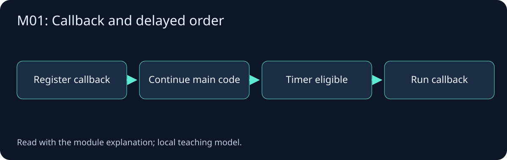
A timer schedules work; it does not pause subsequent statements.
Read moduleM02: Scheduling trace
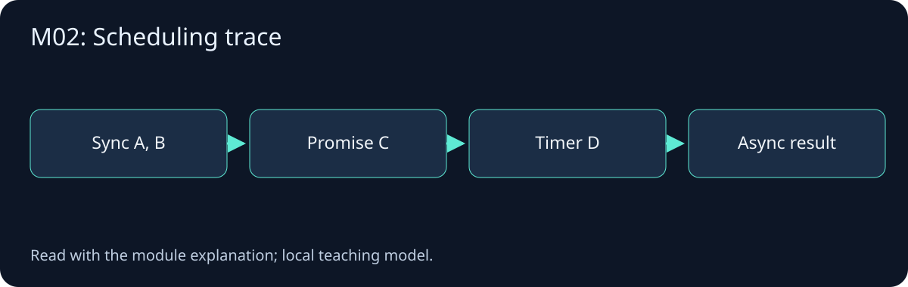
This is the supplied example trace, not a universal ordering diagram for every Node context.
Read moduleM03: DOM event path
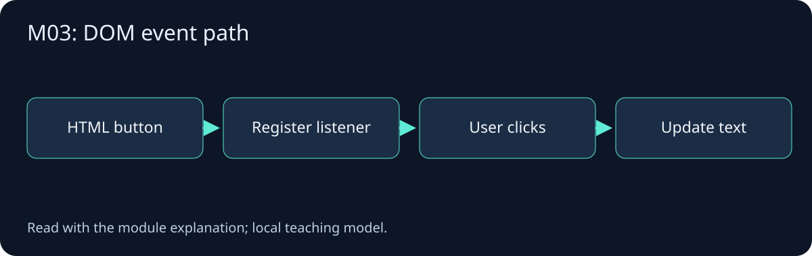
Show the real button screenshot beside this diagram; registration happens before the click.
Read moduleM04: One event, several listeners
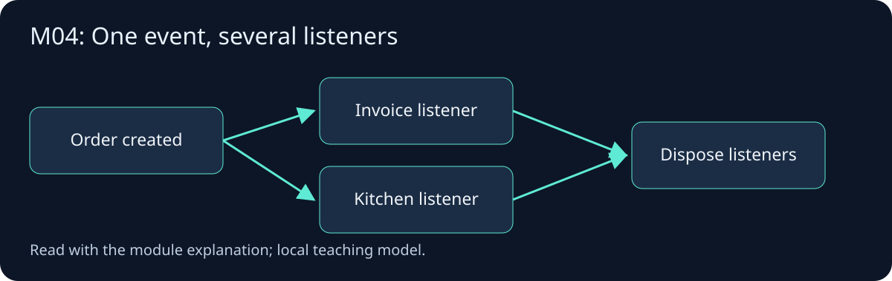
Invoice and kitchen both react; the arrows here show reading order, not an async queue.
Read moduleM05: Latest request wins
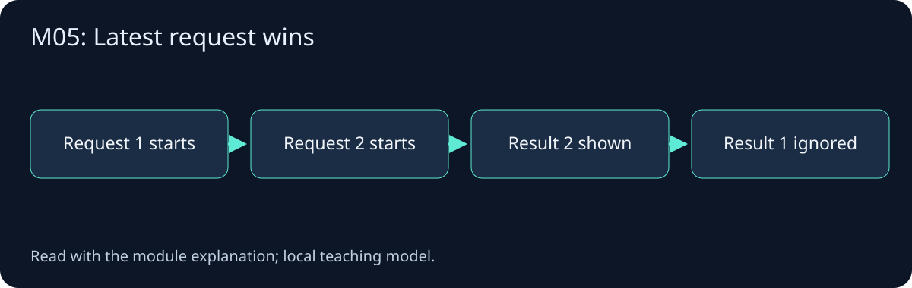
An old response must not overwrite a newer request; cancellation alone is not the correctness check.
Read moduleM06: Typed event boundary
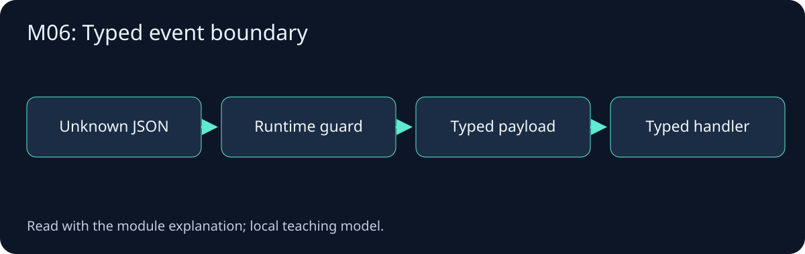
TypeScript checks source; the runtime guard checks external data.
Read moduleM07: Order state machine
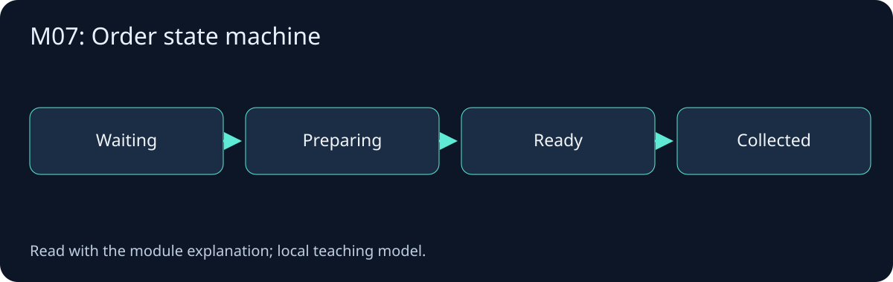
Only allowed transitions succeed. A direct waiting-to-collected command is rejected.
Read moduleM08: Reactive search pipeline
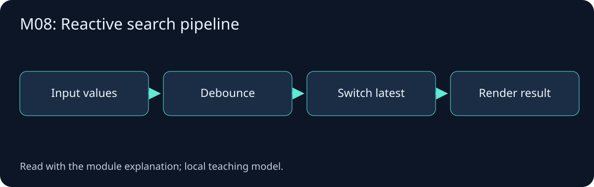
The browser example uses simulated results. Unsubscription tears down the stream.
Read moduleM09: Live announcement flow
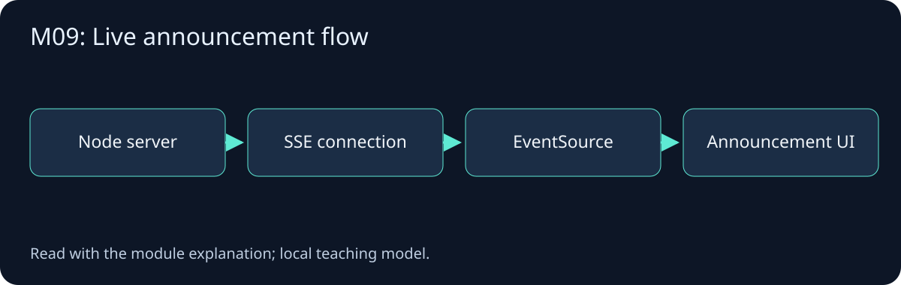
The stream is server-to-client; the sample has no durable replay.
Read moduleM10: Stream pipeline
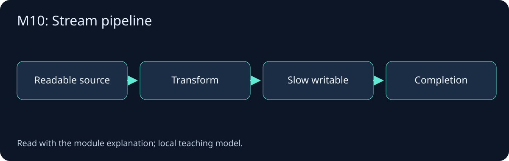
Backpressure communicates capacity upstream; highWaterMark is not a universal hard memory cap.
Read moduleM11: Behavior test cycle
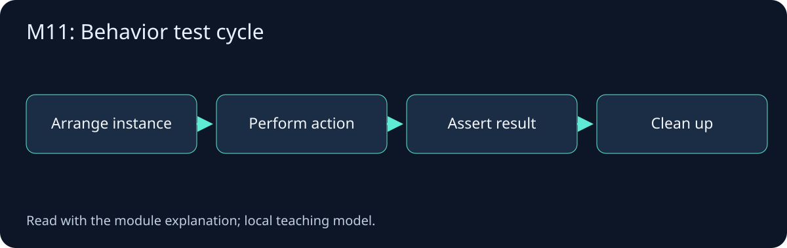
A useful test checks rejected actions and cleanup as well as success.
Read moduleM12: Messaging model comparison
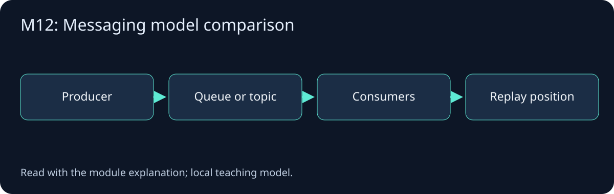
Use separate slides for competing consumers, broadcast and retained logs; do not imply identical guarantees.
Read moduleM13: Reliable consumer
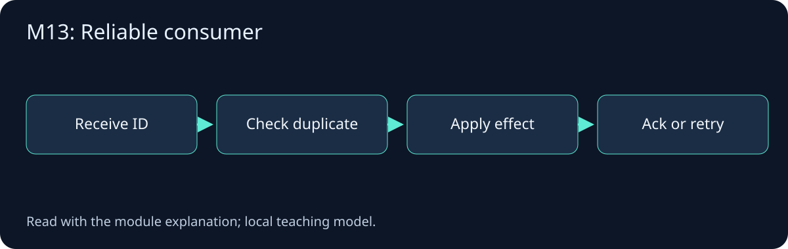
Real deduplication and the business change need an atomic durable boundary; this model is in memory.
Read moduleM14: Outbox publication
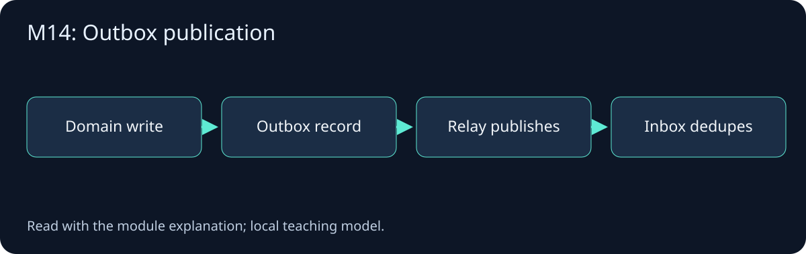
Domain write and outbox insert belong in one local transaction. Delivery can still duplicate.
Read moduleM15: Replay and projection
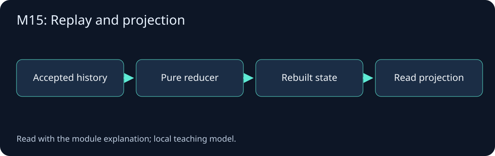
Replay computes state; it must not blindly repeat emails or payments.
Read moduleM16: Saga recovery
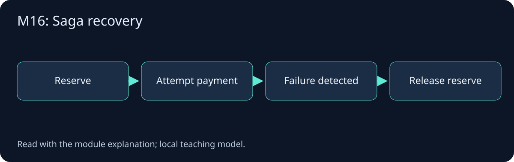
Compensation is a new action and can itself fail; it is not always a perfect rollback.
Read moduleM17: Observe and authorize
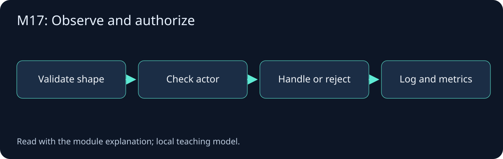
Correlation helps trace work; it does not authenticate the actor.
Read moduleM18: Solo project vertical slice
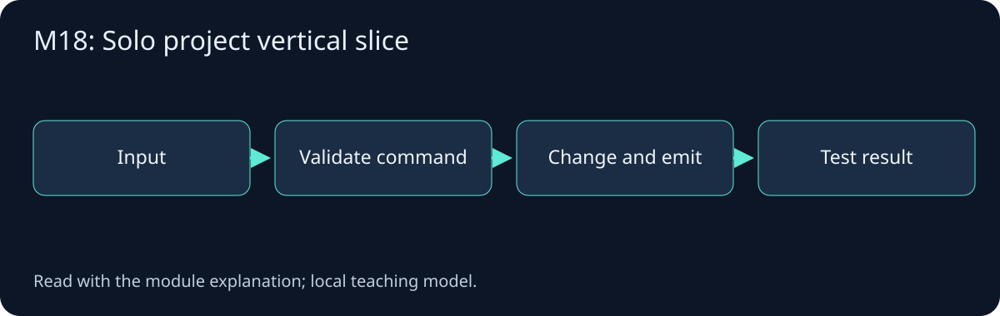
One complete personal feature is the core; label optional network/database boundaries honestly.
Read moduleM19: Repair rehearsal
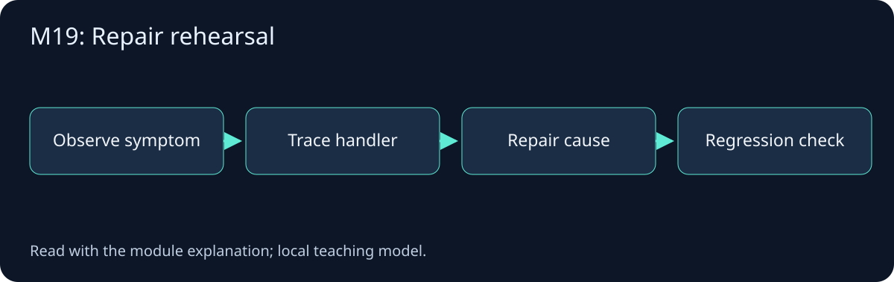
Introduce one fault at a time and explain the mechanism before adding more complexity.
Read moduleM20: Submission readiness
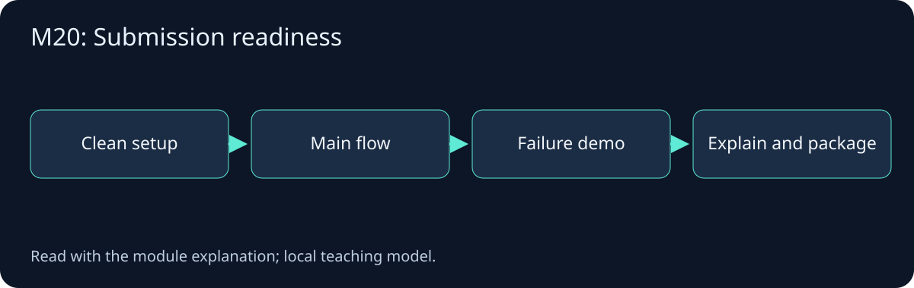
Include reproducible commands, references and known limitations; keep credentials out of the archive.
Read module